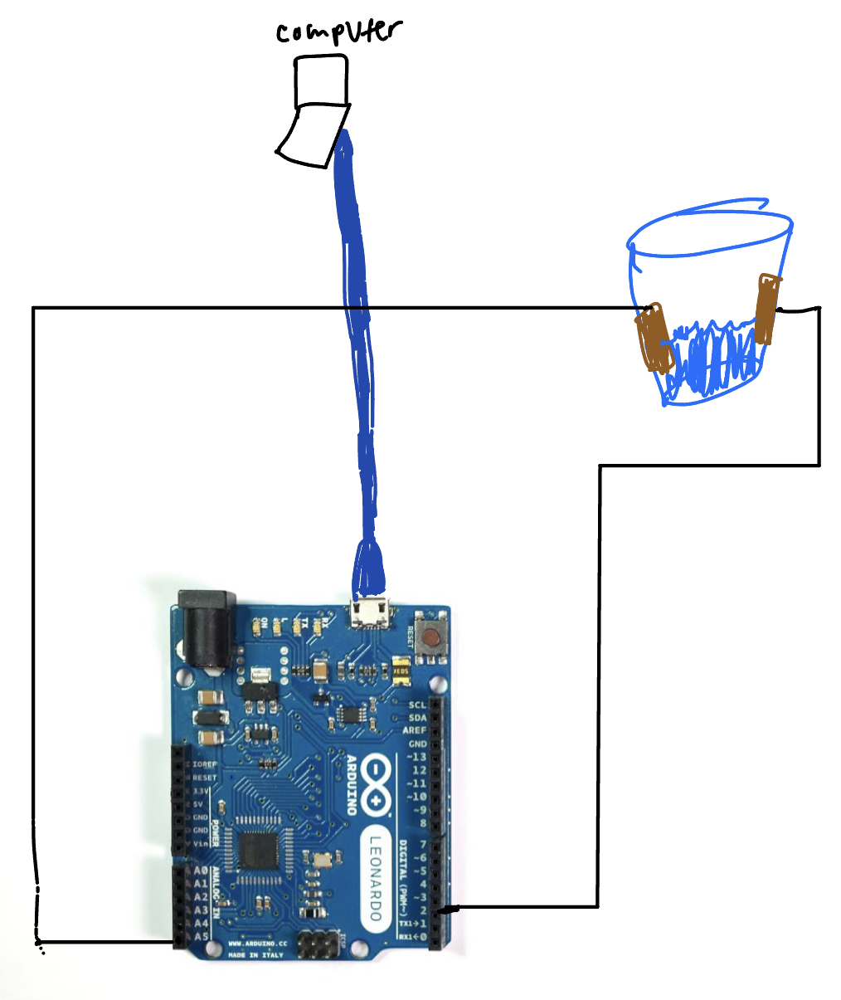
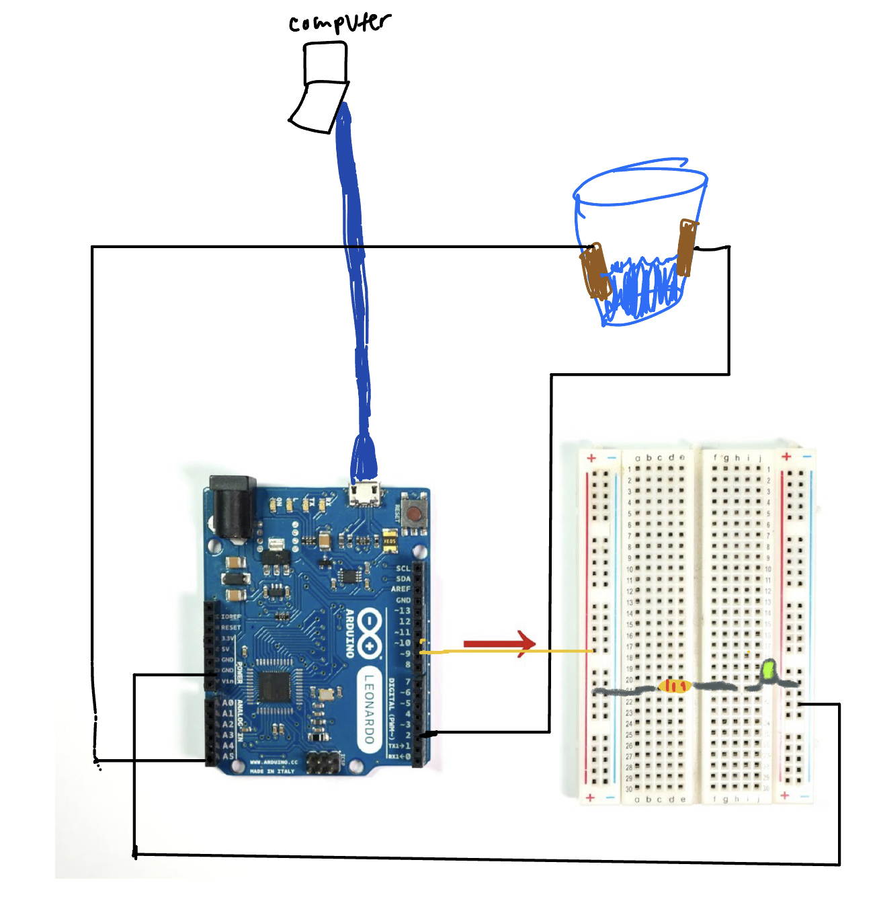

<div class="textcontainer">
<p class="margin"> </p>
<h3>Week 6: Electronic Inputs</h3>
<h4>Assignment 1: Capactive Sensor<h4>
I made a capactive sensor that measured water levels in a cup.

<img src=" ./chartwater.png" alt = "water level chart"
style="width:33vw">
<h4>Assignment 2: [Use + Calibrate Another Sensor]</h4>
Here I added the LED to make the light turn on when there was 70+ mL of water in the cup.
<video width="640" height="480" controls>
<source src="watersensor.mp4" type="video/mp4">

</div>